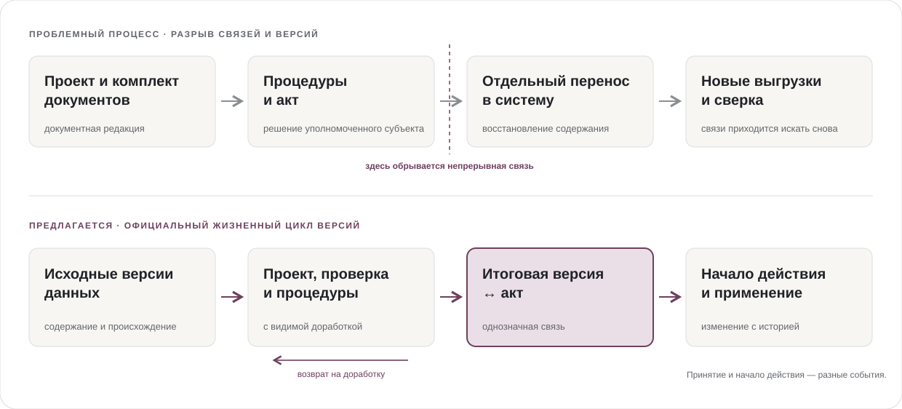

01
Зачем менять подход
Связать подготовку, принятие и применение решения
Цифровые системы, структурированные сведения и электронные услуги уже существуют. Но градостроительное решение нередко готовят и принимают в документном контуре, а затем отдельно переносят его содержание в информационные системы. Следующему участнику снова приходится сверять версии и восстанавливать связи.
Концепция предлагает сделать официальную цифровую редакцию опорой всего жизненного цикла: от подготовки и обсуждения до принятия, начала действия, применения и изменения. Профессиональные инструменты проектировщика при этом сохраняются.
Проблемный процесс, описанный в Концепции
Официальное содержание приходится повторно переносить и сверять между представлениями.
Предлагаемый процесс
Версия, процедура и правовое основание связаны в одном жизненном цикле.

Схема показывает типовой разрыв и предлагаемую модель, а не устройство каждой действующей системы.